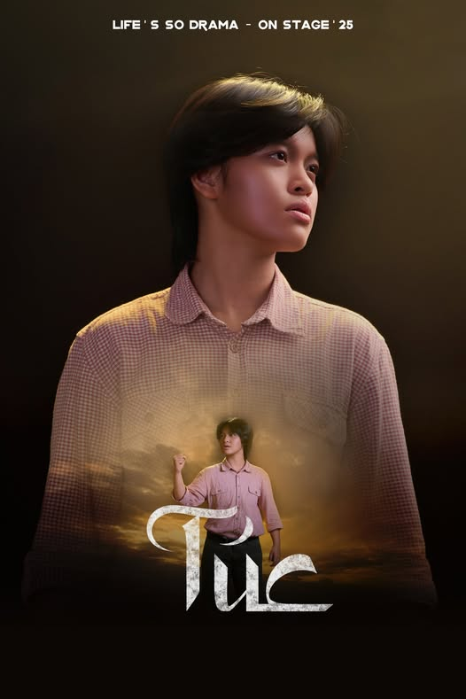

Nhân vật Túc
- Nam, khoảng 20 tuổi, từng là trẻ mồ côi lớn lên trong cô nhi viện.
- Cậu có tính tò mò, ngây thơ, bốc đồng, thích tìm tòi tìm hiểu sự thật đằng sau tất cả mọi thứ.
- Là 1 trong những người hiếm hoi không tin vào thần linh và tâm linh ở trong làng và tin rằng sự thật và khoa học luôn là thứ tốt đẹp và có lợi dành cho ngôi làng.
- Đại diện cho người trẻ thanh niên đầy năng lượng, luôn muốn tìm tòi, học hỏi.
- Sau sự kiện chính, cậu trở nên chín chắn hơn và góp phần phát triển tiếp cô nhi viện của làng.
- Trang phục: màu nâu cam